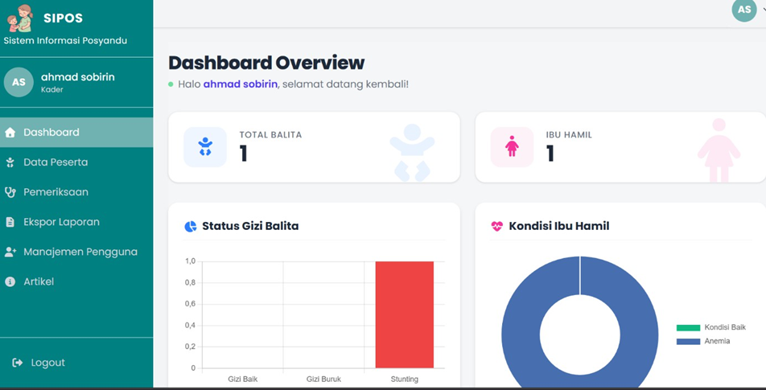
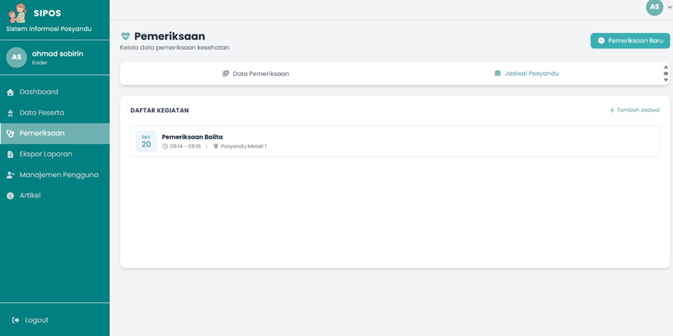
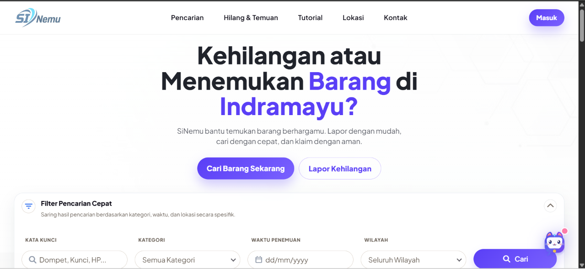
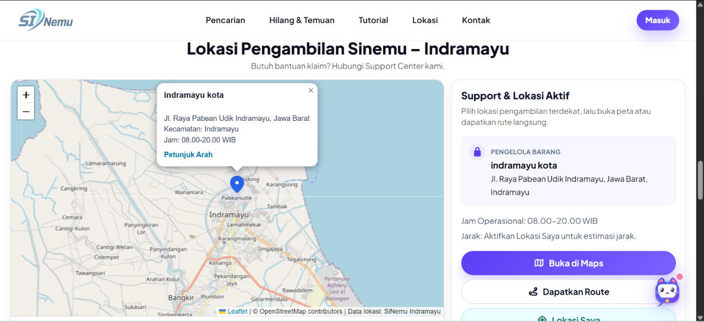
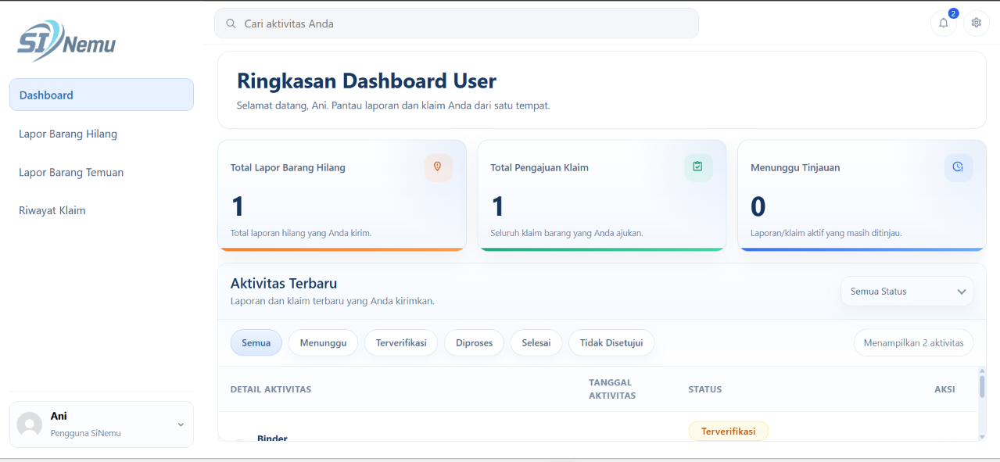
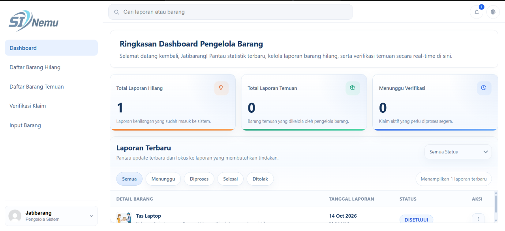
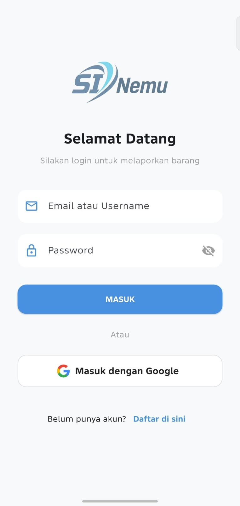
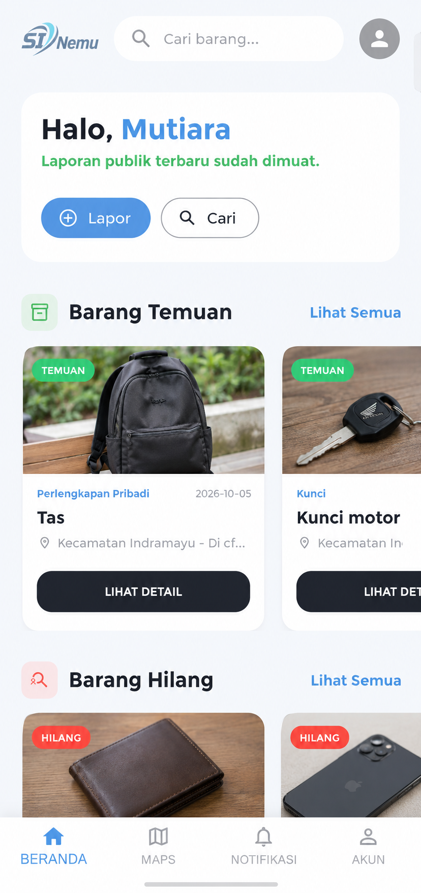

Programming & Framework
Membangun antarmuka dan logika aplikasi berbasis web & mobile.
Halo, saya Ani Kartini, mahasiswa D4 Rekayasa Perangkat Lunak di Politeknik Negeri Indramayu. Saya memiliki ketertarikan besar pada pengembangan web dan mobile, mulai dari analisis kebutuhan, perancangan sistem, implementasi, hingga pengujian.
01 / GET TO KNOW
Saya memiliki pengalaman mengembangkan proyek berbasis website dan mobile melalui proses analisis kebutuhan, perancangan sistem, implementasi, hingga pengujian. Saya memiliki dasar dalam PHP, Laravel, JavaScript, Dart, Flutter, dan MySQL, serta terbiasa bekerja secara kolaboratif. Saya juga memiliki kemampuan problem solving dan cepat beradaptasi dengan teknologi baru.
02 / SKILLS
Dasar teknis yang saya terapkan dalam proses pengembangan project.
Membangun antarmuka dan logika aplikasi berbasis web & mobile.
Mengelola basis data dan mendukung kolaborasi tim.
Merancang alur dan struktur sistem sebelum diimplementasikan.
Membuat skenario pengujian untuk memastikan sistem berjalan sesuai kebutuhan.
03 / EDUCATION
D4 Rekayasa Perangkat Lunak
Agustus 2024 — Sekarang
Mendalami pengembangan perangkat lunak melalui pembelajaran Rekayasa Kebutuhan, Desain Perangkat Lunak, Basis Data, Pemrograman Web, Struktur Data, Sistem Operasi, Jaringan Komputer, dan Software Engineering.
04 / SELECTED WORK
Project akademik yang berangkat dari kebutuhan nyata dan dikembangkan secara bertahap.
Sistem informasi berbasis website untuk mendigitalisasi pengelolaan data Posyandu (ibu hamil dan balita), mencakup data kesehatan, jadwal, dashboard statistik, hingga ekspor PDF.



Solusi digital (Web & Mobile) untuk membantu masyarakat Indramayu melaporkan, mencari, dan mengklaim barang hilang maupun temuan secara terintegrasi.
Fitur AI sedang dikembangkan sebagai lanjutan project, mencakup chatbot AI berbasis web dan dukungan analisis klaim.






05 / CONTACT
Untuk pertanyaan atau diskusi seputar project dan pengembangan perangkat lunak, silakan hubungi saya.